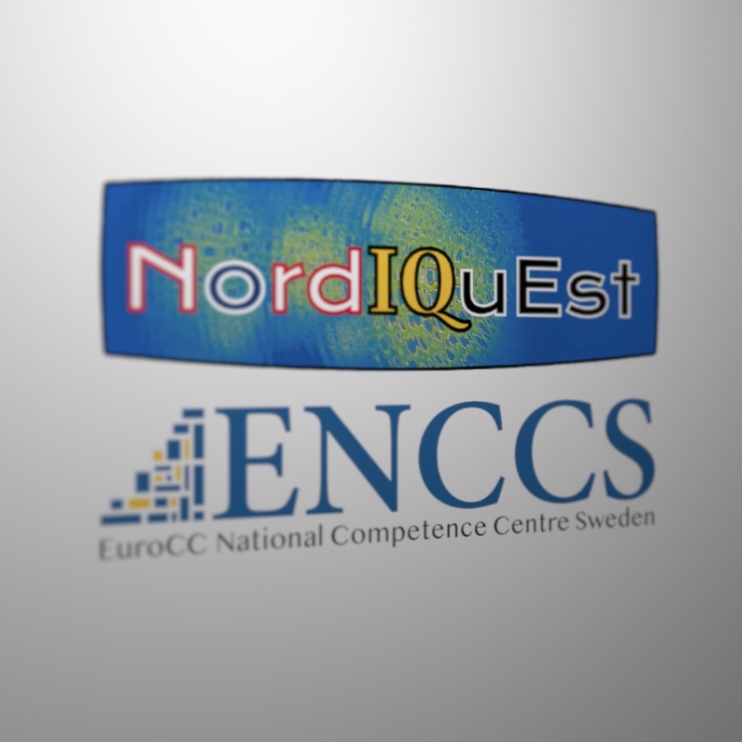

Introduction to Quantum Computing & Hybrid HPC-QC Systems 
Preparation
Installation and setup
Day 1 lectures
The HPC-QC landscape
Introduction to digital quantum computing
Overview of different QC hardware approaches and QC types
Introduction to high-level languages for QC
Day 1 hands-on
Quantum programming I
Quantum programming II
Quantum programming III
Day 2 lectures
The hybrid HPC-QC approach
Overview of the software stack
Hybrid classical/quantum algorithms
Quantum software testing
Day 2 hands-on
Quantum software testing with Quito
Use case: Quantum chemistry
Use case: Optimization
Reference
Example episode
Quick Reference
Instructor’s guide
Introduction to Quantum Computing & Hybrid HPC-QC Systems
Index
Edit on GitHub
Index